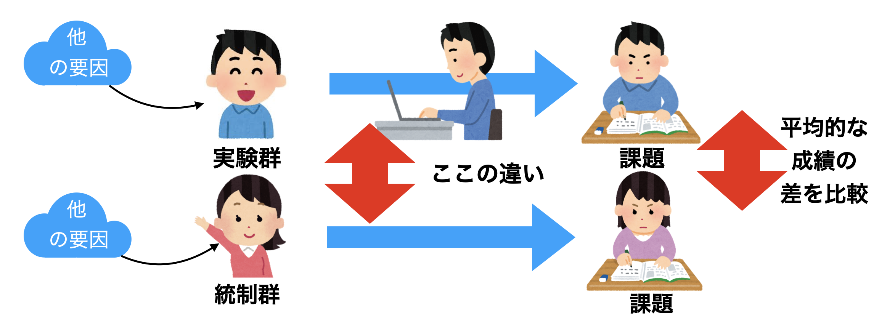
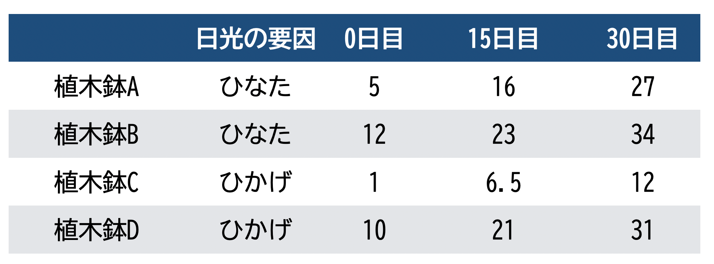
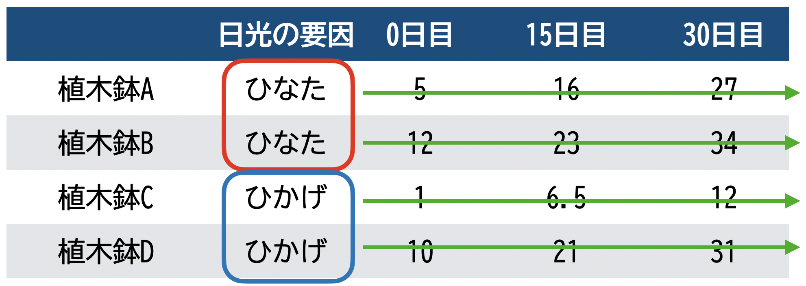
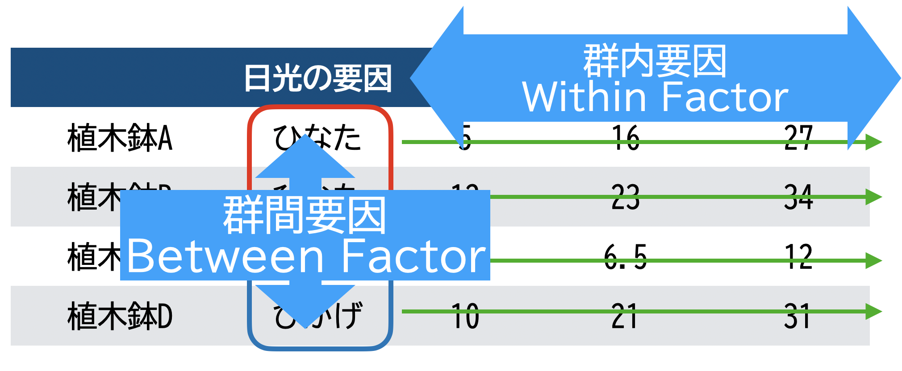
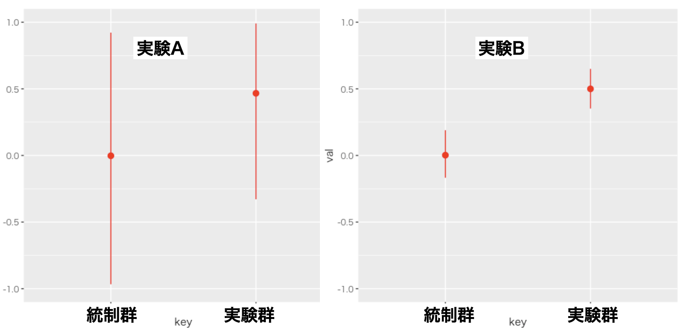
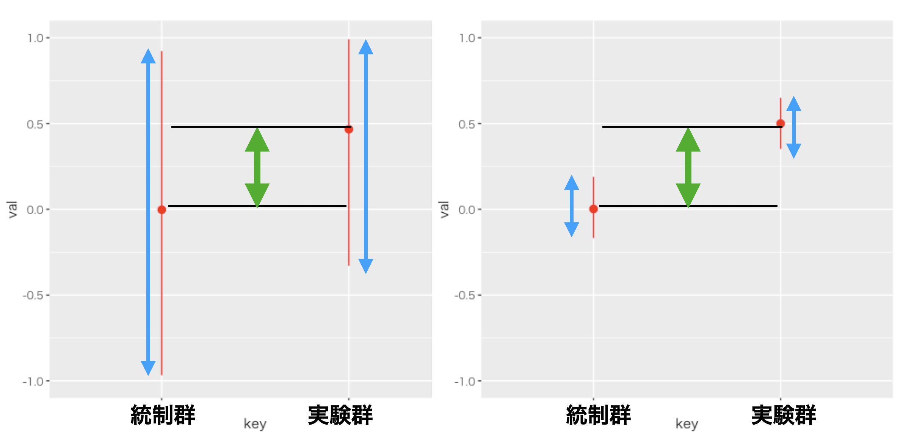

Chapter 4 実験計画法1；実験計画法とは
さてここまで線形モデルによって変数間の関係を記述し，予測できるというお話をしてきました。相関係数や回帰分析による影響力で判断する方法でした。心理学の研究においてこうした相関関係をもとに考察を進める事は少なくありませんが，もう1つ，実験的なアプローチによってより因果的な効果を検証する方法がとられることも少なくありません。
ここからは心理学における実験と，その分析方法についての話に進んでいきます。
4.1 ランダム化
心理学は人間を対象にした学問であり，研究の方法は様々なものがあります。一般的には，調査，観察，実験，面接などの方法がとられます。ここでいう実験とは，皆さんが小中学校の理科の時間の時に習ったような実験と，同じようなものだと思っていただいて構いません。ただしその対象が人間になっているというところに，注意が必要なだけです。その注意というのは，もちろん倫理的な問題も多く含みますが，それに加えて，物理学の実験と違って研究の対象が意思を持っているというところです。そうした研究対象特有の問題に考慮しつつ，実験とはどのように進めていくべきかを考えてみましょう。
たとえば簡単なところから，小学校の理科でやるような実験として，次のような例を考えてみましょう。植物の種をまいて，植物の成長にはどういった要因が必要なのかを考える授業をするとします。ここでいろいろな条件を考えて実験を計画しますね。たとえば日向と日陰を比べればどちらが成長が早いのかとか，水をあげた場合とあげない場合とではどちらが成長が早いのかとか，どういった肥料をどれぐらいあげれば成長が速くなるのかといったことを検証したいとします。
たとえば日光の効果を検証したいのであれば，クラスの半分は日向に残りの半分は日陰に種をまいて，どちらの方が成長が良いかを記録するという方法で実験することになると思います。当然のことながらこの時重要になってくるのは，日向か日陰かという条件以外の要素を変更しないことです。たとえば日向にまいた種だけに水を与えるとか肥料与えるといったことをすると，最終的に得られた成長の違いが日光によるものなのか，それ以外の要因によるものなのか区別できません。これでも研究の目的が果たせないわけです。実験をする場合は，検証したい条件の違い以外は均一にしておくというのは絶対条件です22。
何を当たり前のことをと思われるかもしれませんが，人間の場合は様々な要因が絡み合っているので，何か1つの効果を見るために他のものを統制しようとしても，統制すべき要因が無数に考えられてしまうので，おのずと限界があるわけです。
人間を研究の対象にする場合の問題は他にもあります。まずこの授業でも冒頭のほうにお話ししたと思いますが，何を結果変数にするかというところも明確ではありません。人の気持ちのようなものが従属変数になっていたとして，その気持ちをどのように測定するのかという測定方法にも様々な注意すべき点があるでしょう。測定するべき対象が明確になっていたとしても，被験者に負担をかけすぎないかどうかは倫理的に検証されるべきです。また，研究対象が人間ですから，人間の回答は嘘をつかれることもあれば，間違うこともあれば，実験者の意図を汲んで自然な状態でない反応することもあります。こうした問題に対しては，を始め様々な方法で問題を回避しなければならないといった事は，心理学研究法の方で話を聞いていることと思います。
先に述べた測定の問題と，後半で述べた倫理的な問題を始めとする研究法の問題は横に置いたとしても，実験にはコントロールしてもコントロールしきれないものが含まれる事はお分かりいただけると思います。このコントロールしきれない部分のことをと言いますが，偶然誤差に振り回されるだけではなくこれを積極的に利用することによって，実験の質を高めるために利用できます。偶然をハンドリングするのです！
人間を対象にした実験の例を考えてみましょう。たとえば新しく商品開発された3つのミネラルウォーターがあったとして，いろんな人に試し飲みしてもらって採点してもらったとします。このドリンクA,B,C について評価してもらうとして，その場合に気にしないといけないことがあります。1つはどの順番で飲んでもらうかということです。たとえばドリンクAに甘い味がついていたとして，その後でB,Cを飲むと味が薄いと評価されるかもしれません。あるいは1種類目2種類目3種類目と順番に飲んでいたとして，最後のほうはもうお腹がタポタポで全然味の評価ができないということがあるかもしれません。このようにどういう順番で飲むかとか，どの並びで飲むかといったことも評価に影響してきます。こうなってくるとこれはもう統制できませんので，諦めるのではなくて，逆に偶然の力を借りるのです。つまり，サイコロを振って1か2が出ればA，3か4が出ればBをまず飲む，といったようにし，人によって飲む順番も並びもバラバラになってしまえば，飲む順番や並びの効果があったとしても，相互に影響を殺しあって，平均をとればそれぞれのミネラルウォーターの評価として使うことができると考えるわけです。
ここでこのようにバラバラにするということを，言い方を変えるとするといいます。英語でランダムrandomは確率とも訳されます23。確率化すると言い換えても構いません。偶然をハンドリングするために，確率の力を借りようというわけです。
被験者を選んでくる時も確率の力を借ります。人には様々な個性があり，それを統制した上で実験をするなんて事は不可能です。しかし1人ではなくて多くの人間を集めてそれを無作為に群分けするのです。無作為にグループを分けていますから，どちらのグループにも様々な人が入ることになります。味覚に敏感な人やそうでない人など，今回の実験に関わる個性があったとしても，2つのグループの平均を見ると個性がお互いにキャンセルアウトしあって，平均的には同程度の評価ができるだろうと考えることができるわけです。
心理学における実験で因果的な効果を考える場合は，無作為24に群分けをし，一方を，他方をと呼びます。実験群には何らかの操作が加えられます。これに対して統制群には何もしない，あるいは何の効果もない同程度の介入をします25。無作為に群分けしているので実験群のグループに含まれる様々な原因の効果は，統制群にも同程度に含まれているはずです。それが課題に影響与えるものであったとしても，これは両群に同程度の効果を持っているはずです。介入の後で両群に何らかの心理学的な課題をさせるとか，反応を見るとかします。その結果のところで平均的な成績の差を比較します。何らかの要因があって，それが課題の成績にプラスに出るかマイナスに出るかといったことがあるかも知れませんが，群全体としてはそれは同程度のはずです。それを超えて群の間に差があるとしたら，その原因は操作をしたかしなかったかにあると言えるではありませんか。この様にして，因果的な効果を考えることができるようなるのです(図1.1)。

RCTの基本的枠組み
これが実験の基本的な枠組みです。集団の平均的な違いは，無作為に群分けすることで個体差を相互に打ち消し合うための仕掛けです誤差をコントロールする方法の1つと言えるでしょう。この方法をといいます。偶然誤差，あるいは個体差が相互に打ち消し合うのは，それらが正規分布に従うという特徴を生かした方法だとも言えるでしょう。
ここで改めて正規分布には2つの大きな意味があることを思い出してください。1つは誤差の分布として，です。偶然誤差はどの程度散らばるかということがわかれば，それを見込んで評価できます。データは真の値+誤差(\(X=t+e\))というはこの特徴を利用しているのでしたね。
もう1つ，集団全体の傾向を表す分布として正規分布を使うこともあります。とくに平均がどのあたりにあるのかに注目し，その傾向を掴むといった統計的な使い方をします。平均身長や平均寿命を考えるのはこういったところにあるわけですね。この時は個人の特徴を平均からの逸脱の程度，期待値+個人差という考え方だといえます。この考え方は心理学全域に関わるモデルです。平均的な傾向を探ったり比較したりすることで，人間全体の傾向を考えようというわけです26。
このように正規分布には2つの意味があるのです。第一の意味は偶然誤差の分布。平均が0で分散が\(\sigma^2\)の正規分布に誤差が従うと考えます。第二の意味は集団全体の傾向です。個々人に影響する様々な要因を特定することはできませんが，集団全体としては1つの傾向を持つ，つまりある平均値があり，そこから離れるほどその出現度数が少なくなるというパターン全体を表しています。 その集団を2分に分けても，平均的な傾向は同じ，つまり同じ平均値と分散を持った正規分布に分割されるでしょう。その一方の群に何らかの操作をして，平均値が異なるようであれば，それはその操作の影響だと考えることができるわけです。正規分布が心理学において中心的な分布であるということの意味がわかっていただけたかと思います。
4.2 用語の整理
4.2.1 要因と水準
このセクションでは今後のために実験計画に関わる用語を整理していきます。
実験の例として，心理学的な話ではありませんが，小学校の理科でやったような植物の成長に関する実験をとりあげます。植物の成長には何が必要かを学ぶための実験で，植木鉢を日向に置いたり日陰に置いたり，水分をあげたりあげなかったり，肥料をあげたりあげなかったりします。そのような条件のもとで，1ヵ月間でその植物が何センチ成長したかを記録することにしました。
この実験の例でいうと，(ともいう)と(ともいう)は明らかですね。従属変数は，1ヵ月間で成長した植物の長さということになります。独立変数は，日光があるかどうか(日陰か日向か)，水分があるかどうか(水をあげない，時々あげる，毎日あげる)，肥料をあげるかあげないか，といった3つになります。従属変数はで，独立変数はになります。
このように，実験や研究で検証したいもののことを，といいます。ここでは日光，水分，肥料の3つの要因がありますので，「この実験は3要因計画である」と言ったりします。
3つの要因にはそれぞれ比較したいが複数あります。日光という要因は，日向/日陰という2つの水準がありますので，日光という要因は2水準ある，などと表現します。今回の例の場合，水分は3水準，肥料は2水準です。
とを使ってこの実験を表現するときは，「3要因の2× 3 × 2デザイン」と言ったりします。実験がどのようにデザイン(計画)されているか，ということを説明する用語です。
4.2.2 群内計画と群間計画
さて要因と水準という言葉の違いがわかったところで，実験計画に関わるもう1つの区別について説明しましょう。先程と同じように植物を測定する実験の例を考えます。ただし今回は要因として1つは「日光」，つまり日向なのか日陰なのかの比較をすることを考えたとします。この条件のもとで1ヵ月間記録し， 日向と日陰で成長がどれぐらい違うのかを，0日目，15日目，30日目に記録して比較することを考えたとします。得られるデータは図1.2のようになることがお分かりいただけますでしょうか。

得られるデータ
ではこの時に考えられる要因ですが，1つはもちろん日光ですがこれは1行目+2行目と3行目+4行目の条件を比較すればわかることになります。ただしこの実験はそれ以外にもたくさんの情報を含んでいます。それは1つの行が1つの植木鉢についての繰り返し獲得できた情報だということに起因します。データを見ると，植木鉢Aとか植木鉢Cはそもそも初日でほとんど芽が出ていませんでした。それに対して植木鉢Bと植木鉢Dは，初日ですでに10センチ以上の芽が出ていたことになります。こうした実験開始時の個体差というのは，今回の研究でどのように考えるべきでしょうか。今回の研究では日光がどれぐらい成長を促進するかということに興味があるのであって，そもそもの個体差は興味がなく，何なら実験にとって邪魔な情報ですらあります。
成長の促進の度合いは0日目と15日目との差分，15日目と30日目との差分でもって表されることであって，スタート地点の情報は必要ありません。 同じ答えから反復してデータを得ているわけですから，行方向に数字を見ていくことによって，個体差を取り除いた変化量を考えることができます(図1.3)。

比較できる方向
このように，日向と日陰といったグループ間の違いを見る要因と，個体差を考慮して1つ1つの個体がどのように変化していったかを見るグループ内の違いを見る要因があります。用語としてそれぞれとといいます。今回の例では，日光を群間要因，測定日を群内要因と呼ぶことになります(図1.4)。
この実験は群内要因と群間要因が組み合わさっていますので，とくにと呼ばれることもあります。水準数にも配慮して表現すれば，この研究は2要因の2\(\times\) 3デザインあるいは「間2\(\times\)内3の混合計画」という言い方をします。

群内要因と群間要因
皆さんが実験を計画するときには，これらの言葉を使ってどういった要因を考え，どういった計画を立てているのかを表現する必要があります。ちなみに群間要因は別名要因とも言います。対して群内要因は，要因，あるいはそのデータの性質から要因とも呼ばれます。
後ほどの講義で詳しく説明されますが，群間要因計画と群内要因計画を比べると，群内要因計画の方が個人差を算出できることから，より精度の高い分析になります。群間要因計画はとを区別できないため，群内要因計画に比べると分析の精度は下がります。じゃあ全部群内要因で実験を計画すればいいじゃないかと思うかもしれませんが，群内要因の別名，「反復測定」という言葉にあるように，人を対象にする実験計画はそのまま実験参加者に対する負担になります。そういったことも考えると，内容によっては群間要因計画にせざるをえないということも少なくありません。
また，人間を研究対象にする場合は，考えるべき要因がたくさんあることも少なくありません。あの要因もこの要因も関係してくるに違いないと考えると，実験計画の要因数はどんどん増えていきます。ただしこの後見ていくように，要因をどんどん増やすと組み合わせを考慮しなければならない数も多くなり，解釈も難しくなりますから，せいぜい3要因で，できれば2要因までで研究計画をすることをお勧めします。
4.3 実験でなぜ効果がわかるのか
ここまで実験計画の用語の整理をしてきました。因果関係をわかるためには実験をしなければならない。自分で実験の計画を立てて，要因の効果があるかどうかを確かめようというのは心理学でも長らく行われてきた研究のやり方です。 ここでそもそも実験でなぜ効果がわかるのかということを考えてみたいと思います。 その大枠については，ランダム化のセクションのところでお話ししましたが，ここではもう少し掘り下げて，数字を使ってどこにどのような形で違いが現れ，何を評価すれば良いのかについて考えていきたいと思います。
4.3.1 平方和の分解
表1.1をみてください。これは一要因3水準，Betweenデザインの実験データです。カバーストーリーとして，植物の成長を見る実験で水を毎日あげる，時々あげる，あげない，という違いを作って比較したものだと思ってください。要因は「水」で，水準は3，「まいにちあげる」を1，「時々あげる」を2，「あげない」を3とコーディングしたもので，実験期間終了後に成長した長さを測って従属変数にしたとします。各水準に4つずつ植木鉢を用意し，無作為に種を巻いて記録します。複数の植木鉢を用意するのは，その他の条件を相殺させるための手続きですね。
ここで表記法(notation)について説明しておきましょう。従属変数\(y_{ij}\)として，\(i\)が個体番号(ID)，\(j\)が実験水準を表しているとします。\(y_{11}=6\)というのは「毎日水をあげている条件」の1つめの植木鉢は成長が6cmだった，，\(y_{23}=3\)というのは「水を上げなかった植木鉢2は成長が3cmだった，という意味です。
| id | condition | notation | value |
|---|---|---|---|
| 1 | 1 | \(y_{11}\) | 6 |
| 2 | 1 | \(y_{21}\) | 6 |
| 3 | 1 | \(y_{31}\) | 5 |
| 4 | 1 | \(y_{41}\) | 5 |
| 1 | 2 | \(y_{12}\) | 7 |
| 2 | 2 | \(y_{22}\) | 4 |
| 3 | 2 | \(y_{32}\) | 7 |
| 4 | 2 | \(y_{42}\) | 6 |
| 1 | 3 | \(y_{13}\) | 4 |
| 2 | 3 | \(y_{23}\) | 3 |
| 3 | 3 | \(y_{33}\) | 4 |
| 4 | 3 | \(y_{43}\) | 6 |
\[table::21_02\]
これを見ると結果としての数字はバラバラです。ですが，群ごとに平均を求めると，個体差等今回見たくない他の要因は消しあって効果の大きさだけが見られるということでしたよね。そこでそれぞれの群の平均を計算してみましょう。 それぞれの群平均は，\(\bar{y}_1 = 5.5,\bar{y}_2 = 6.0,\bar{y}_3 = 4.25\)であり，全体平均は\(\bar{y}_{gm}= 5.25\)になります。
ここで結果から逆に，どうしてこういった数字になったのかを考えてみたいと思います。もし仮に，水に成長を変えるような効果が全くなかったとすれば結果はどうなったでしょうか。ランダム化したことによって，見たい要因以外の効果はすべてキャンセルアウトされていたはずです。個体差も今回みたい要因ではなかったわけですから，そのために4つの鉢を用意しておいたわけで，原理的には全部同じ数字になるはずだったのです。ではどういう数字になるはずだったのでしょうか。どの効果もなかったわけですから，このように考えると，何の効果も個体差もなければ，すべての鉢は5.25cmの成長だったはずなのです。
しかしもちろん実際には，個体差があります。さらに水も何らかの効果があったと思われます。その大きさを考えてみましょう。水の効果はどのぐらいあったのでしょうか。水を挙げた群，すなわち\(y_{i1}\)のグループは，平均で5.5cmの伸びになっています。何の効果も考えなければ5.25cmだったはずなのに，水をあげた群は5.5cmになっていた。この事実から考えるに，差分すなわち\(5.5-5.25=0.25\)cmが水をあげたことによる効果だったと考えることができます。水を時々あげたときの効果はどうでしょうか。\(y_{i2}\)のグループは，平均で6.0cmの成長しています。全く何の効果もなければ，5.25cmしか伸びなかったのに，この本は6.0cm伸びていたわけですから，\(6.0-5.25=0.75\)cm普通より大きいことになります。これが水を時々あげたことによる効果です。水を全くあげなかったときの効果はどうでしょうか。\(y_{i3}\)のグループの平均は，4.25cmです。全く何の効果もなければ，5.25cmの成長ができたはずなのに，今回は4.25cmしか成長できませんでした。これは，水をあげなかったことによる効果が，\(4.25-5.25=-1.0\)cmだったということができます。もちろん平易な日本語で言えば，水をあげなかったことによって1センチメートル成長が抑えられた，成長の効果はなかったというところですが，ここは表現を整えるためにもマイナスの効果があった，という言い方をしていきましょう。
このように，群平均ー全体平均＝効果という計算をできます。これが実験計画の基本的なアイディアです。ポイントは，既に様々な影響が入り込んでいる研究対象を，ランダムに配置することによって，平均点を揃えることができる。その上で，介入によって平均値を変えることができる。その変わった平均値の大きさが，効果の大きさだったと考えるということです。ここで注意して欲しいのは，それぞれの群に見られた効果を全て足し合わせると，ゼロになってしまうということです。すなわち，\(+0.25+0.75-1.0=0\)です。このようにあくまでも相対的な比較で検証していることに注意しておいてください。
実はこれで話が終わりではありません。もう1歩進んで，個体差のことも考えます。先程の考え方の例で言えば，全体の平均が5.25，水をあげる群には+2.5の効果が出てきますから，群1に含まれる植木鉢の数字はすべて5.5であるべきなのです。もちろんそのようにはなっていません。\(y_{11} = 6\)で\(y_{41}=5\)です。この，理想通りにいかなかった理由は何でしょうか？ そうこれが，今回の実験では考えられなかった効果です。植物の持っている個体差なのかもしれません。植木鉢に埋められた種と土の接触面積が違ったのかもしれません。あるいはたまたま風が強く当たる場所だったとかそうでなかったとか。ともかく今回の実験では考えられなかった効果です。これらをひっくるめて，と呼ぶしかありません。この偶然誤差がどれぐらいそれぞれの答えに出たかを算出してみましょう。
\(y_{11}\)は5.5であるべきところが6だったのですから，\(6-5.5=0.5\)の誤差が出た，ということができます。同様に全ての個体に対して，結果-群平均=誤差という計算式を当てはめることができます。
記号だと分かりにくいかもしれませんが，データで考えると表1.2のようになります。
| id | condition | notation | value(\(y_{ij}\)) | 全体平均(\(b_0\)) | 群の効果(\(b_j\)) | 誤差(\(e_{ij}\)) |
|---|---|---|---|---|---|---|
| 1 | 1 | \(y_{11}\) | 6 | 5.25 | \(+0.25\) | \(+0.50\) |
| 2 | 1 | \(y_{12}\) | 6 | 5.25 | \(+0.25\) | \(+0.50\) |
| 3 | 1 | \(y_{13}\) | 5 | 5.25 | \(+0.25\) | \(-0.50\) |
| 4 | 1 | \(y_{14}\) | 5 | 5.25 | \(+0.25\) | \(-0.50\) |
| 1 | 2 | \(y_{21}\) | 7 | 5.25 | \(+0.75\) | \(+1.00\) |
| 2 | 2 | \(y_{22}\) | 4 | 5.25 | \(+0.75\) | \(-2.00\) |
| 3 | 2 | \(y_{23}\) | 7 | 5.25 | \(+0.75\) | \(+1.00\) |
| 4 | 2 | \(y_{24}\) | 6 | 5.25 | \(+0.75\) | \(+0.00\) |
| 1 | 3 | \(y_{31}\) | 4 | 5.25 | \(-1.00\) | \(-0.25\) |
| 2 | 3 | \(y_{32}\) | 3 | 5.25 | \(-1.00\) | \(-1.25\) |
| 3 | 3 | \(y_{33}\) | 4 | 5.25 | \(-1.00\) | \(-0.25\) |
| 4 | 3 | \(y_{34}\) | 6 | 5.25 | \(-1.00\) | \(+1.75\) |
| 合計 | 0.00 | 0.00 |
\[table::21_03\]
ここでの計算式を言葉で表現すると，個々の値＝全体平均+効果+誤差，という形になります。Oh La La!どこかで見たことありませんか，この式の形？
そう，ですね！\(y_i=b_0 + b_1x_i + e_i\)と同じ，すなわち個々の値(\(y_i\))が，全体平均(\(b_0\))と効果(\(b_1x_i\))と誤差(\(e_i\))に分解されています実験計画は線形モデルだったのです。 違いは\(x_i\)が説明変数の大きさではなくて，どの群に含まれているかを表す離散的な変数になっているということだけです。 回帰分析では独立変数も従属変数も連続変数だったのですが，説明変数が離散的な回帰分析のことを我々は実験(計画)と呼んでいるのです。
4.4 効果はどのように評価するのか
このようにデータを効果と誤差に分解できました。あとは，効果がどれぐらいあったかをどう評価するかを考えます。 たとえば「水を毎日上げた群」はどれほど効果があったのでしょうか。4つの植木鉢いずれについても+0.25の効果があるのですが，誤差は+0.5から-0.5まで様々です。誤差の大きさを評価するために，足し合わせちゃいましょう！となると当然ながら，どの群においても誤差の総和は0になります。効果が全体平均からの相対的な違いであったことと同じで，誤差というのも群平均からの相対的な違いでしかないからです。
これは「大きさ」を足し合わせることで探そうとしたことに問題があります。誤差は全て足し合わせるとゼロになりますが，それは偶然誤差の位置の話であって，大事なのはどの程度のばらつきをもって現れるか，にあります。誤差は分散で大きさを考えなければなりません。 効果にしてもそうです。効果も大きさで考えるときに総和で考えるのではなく，「水を上げたり上げなかったり，時々あげたりする」という変化に応じて，結果がどの程度ばらついたのかを考えなければなりません。

平均値の差(群の効果)が同じ2つの実験の例。どちらの実験が効果があると言いやすいか。
図1.5を見てください。左に実験A，右に実験Bとふたつの実験結果を示しています。これは箱髭図の箱をとったような図で，赤い点が群の平均値，そこから上下に伸びる線は群の最大値と最小値を結んでいます。 実験Aは実験Bに比べて，分散が大きいのがすぐにわかると思います。実は実験Aと実験Bは，平均値間の差は同じです。この時，実験の効果があった，とはっきり言い切れるのはどちらでしょうか？
実験Aの方は，確かに実験群のほうが平均的には平均値が高くなっていますが，統制群の中にいる最大値の人は実験群の中の数字と遜色ないですし，実験群の最小値の人は統制群に入っててもおかしくない数字です。 これに対して実験Bの方は，統制群の最大値でも実験群の最小値に及びません。いくら頑張っても実験群ほどのスコアを叩き出せないのですから，これは実験群による介入が大きかったと判断しやすくなりますね。
つまり実験によって効果があった，なかったという評価をする時は，群内の分散に比べて群間の分散が十分大きいかどうかで考えることになります(図1.6)。

平均値の差(群の効果)が同じ2つの実験の例。左側は群間の分散(緑の矢印)に比べて群内の分散(青の矢印)が大きいため，効果があるとは言いにくい。右側の例では，統制群の最大値が実験群の最小値にも及ばないほどなので，効果があると言いやすい。
この考え方は，のの話とも繋がります。信頼性の定義は，全分散に占める真のスコアの分散の比率，すなわち次の式になります。
\[Rel = \frac{Var(t)}{Var(X)}=\frac{Var(t)}{Var(t)+Var(e)}\]
実験の効果を評価するのも同じで，全体の分散\(SS_t\)を群間の分散(あるいは効果の分散)\(SS_f\)と誤差の分散\(SS_e\)との関係から次のように表せます。
\[\frac{SS_f}{SS_t}=\frac{SS_t}{SS_t+SS_e}\]
分散を分解し，その比率を評価するこの考え方はとも呼ばれ，心理学における古典的かつ基礎的な研究手法になっています。
4.5 課題
-
もう1つは「説明する」です。↩︎
-
なんで\(b\)なんだ\(a\)でもいいじゃないか，と言われたら返す言葉もないのですが，慣例的に\(b\)で係数を表しています。ちなみに今はアルファベットの\(b\)ですが，後期になると\(b\)のギリシア文字\(\beta\)に変わります。ギリシア文字で表現するのは推測統計学的な推定に関わるようになってからです。↩︎
-
親の身長から子供の身長を予測することを考えてみてください。次にその子が親になって，その子がまた親になって・・・という時に，「背の高い親からは背の高い子しかうまれない」というルールであれば，世界はものすごく高身長なひとと低身長な人に二分されてしまいます。そうではないということは，背の高い親から背の低い子が生まれることもあるし，その逆もあるということです。また野球選手などでルーキーのときは成績がいいのに，2年目になったら成績が下がる，というのは2年目のジンクスなどといわれますが，その人の平均的な能力以上のスコアが出た次の年に，平均的な値に帰るために低くなりがちなことは，当然ありえることでもあるのです。こうした効果のことを回帰効果といいます。↩︎
-
細かい計算式については，(kosugi2018のPp.133をみてください?)。↩︎
-
指数についてこれまで習ったことを思い出してください。\(a\neq 0\)のとき，\(a^0=1\)ですし，\(a^{-n}=\frac{1}{a^2}\)と定義するのでした。↩︎